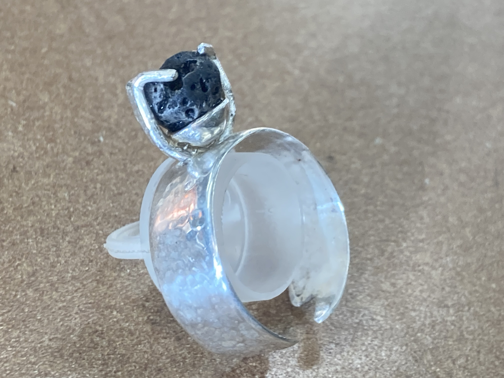
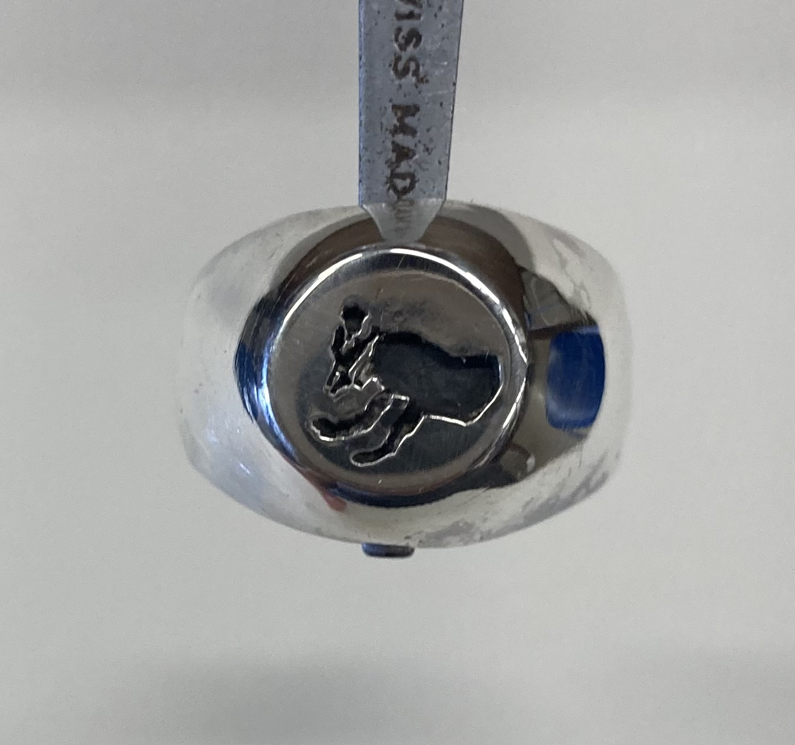
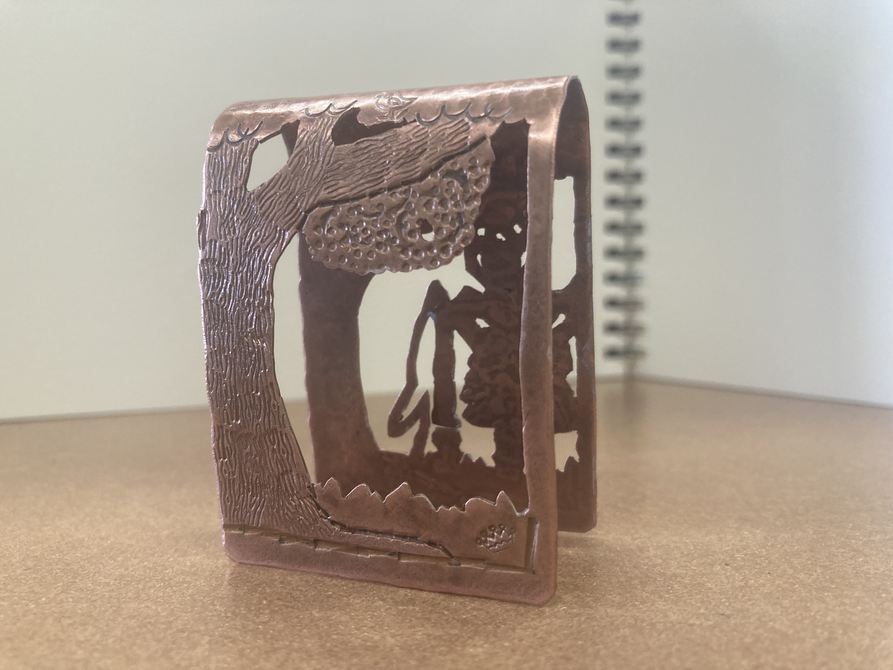
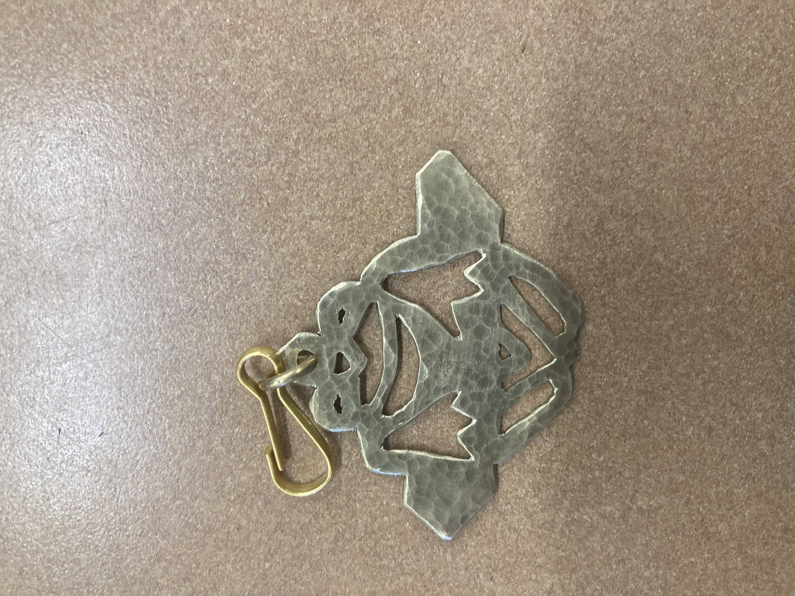

the argent shaker
This is a thick rounded disconnected textured silver lava rock bowl split prong setting ring. Its name comes from the fact that the prong setting is not tight, and the rocks moves when shaken. It is not tight, because the rock is fragile and breaks when you try to tighten it. Argent just means silver, and I think this is a pretty good ring, though not the best I've made. The bottom design was taken from the horns visible in the final bossfight of Hollow Knight.
the sedentary liver
This is a large silver signet ring. This is one of my favorite pieces I have made, as it appears nearly flawless. It is a regular signet ring, which means it was made from a flat metal sheet, not wax. The plate depicts one of my dogs, Tucker, laying on his side asleep. It is black because it was stained with acid. It is polished highly and is very reflective, which I like. I wore it to my first ever mock trial competition.
the fallen watcher
This is a bent copper bookmark that shows a skeleton with a cape staring at a bee nest on a tree. There are many details I like on this piece from the bird up above to the fallen crown in the grass. The texturing was really highlighted here, and really took over, more than the shapes could convey.
the plant swinger
This is a frog-shaped textured brass keychain. The frog is supposed to be shown hanging off of the branch, resembling this photo. This was the first thing I ever made, and I think it is very cool.